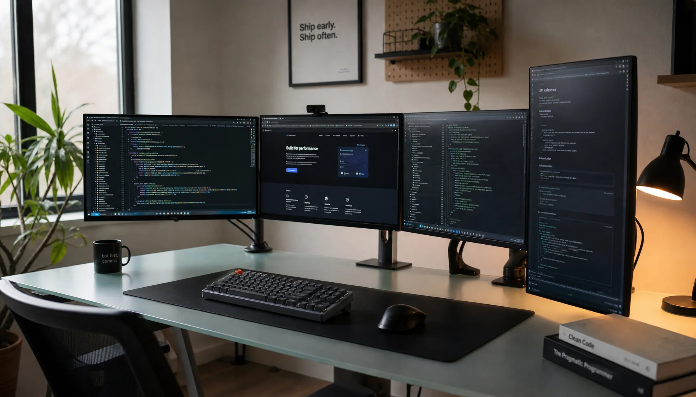

Waarom past ICT bij mij?
Computers zijn al lange tijd een onderdeel van mijn dagelijks leven. In mijn vrije tijd ben ik veel bezig met computers en gaming. Ik vind het interessant om niet alleen programma's en games te gebruiken, maar ook te begrijpen hoe ze gemaakt worden en wat er achter de schermen gebeurt. Daarom heb ik gekozen voor HBO-ICT. Ik wil tijdens de opleiding ontdekken welke richting binnen de ICT het beste bij mij past. Vooral softwareontwikkeling spreekt mij op het moment aan.
Wat wil ik bereiken?
- Een goede basis in programmeren opbouwen
- Verschillende ICT-richtingen ontdekken
- Zelf applicaties leren bouwen
